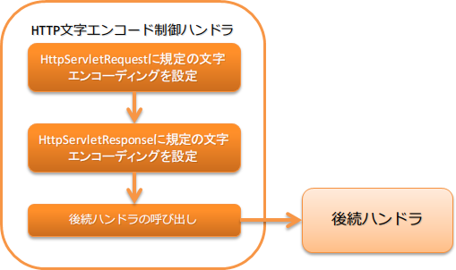

6.2.1. HTTP文字エンコード制御ハンドラ¶
目次
本ハンドラではリクエスト( HttpServletRequest ) 及びレスポンス( HttpServletResponse )に対して規定の文字エンコーディングを設定する。
本ハンドラでは、以下の処理を行う。
- リクエスト及びレスポンスへの規定の文字エンコーディングの設定
処理の流れは以下のとおり。
6.2.1.2. モジュール一覧¶
<dependency>
<groupId>com.nablarch.framework</groupId>
<artifactId>nablarch-fw-web</artifactId>
</dependency>
6.2.1.3. 制約¶
- 本ハンドラは、どのハンドラよりも前に設定すること。
このハンドラより前にハンドラを設定した場合、以下の問題が発生する可能性がある。
- レスポンスに対する規定の文字エンコーディングが設定されない
- リクエストパラメータにアクセスすることで規定の文字エンコーディングの設定が有効とならずサーバサイドで文字化けの原因となる
このため、本ハンドラはどのハンドラよりも前に配置すること。
6.2.1.4. 規定の文字エンコーディングを設定する¶
文字エンコーディングは、 defaultEncoding プロパティに対して設定する。
設定を省略した場合は、 UTF-8 が使用される。
以下に Windows-31J を設定する例を示す。
<component class="nablarch.fw.web.handler.HttpCharacterEncodingHandler">
<property name="defaultEncoding" value="Windows-31J" />
</component>
6.2.1.5. レスポンスに対する規定の文字エンコーディングの設定を切り替える¶
本ハンドラでレスポンスに対して規定の文字エンコーディングを設定した場合、 後続のハンドラで処理した全てのレスポンスに対して文字エンコーディングが設定される。
例えば、後続で画像を返却した場合に、Content-Typeヘッダが「image/jpeg;charset=UTF-8」となる。 このため、本ハンドラのデフォルトの動作では、レスポンスに対しては、規定の文字エンコーディングを設定していない。
WEB APIのように全てのレスポンスに対して規定の文字エンコーディングを設定する必要がある場合には、
以下の例を参照し appendResponseCharacterEncoding プロパティに true を設定すること。
<component class="nablarch.fw.web.handler.HttpCharacterEncodingHandler">
<property name="appendResponseCharacterEncoding" value="true" />
</component>
6.2.1.6. 一律ではなくリクエストごとに文字エンコーディングを変更したい¶
リクエスト毎に文字エンコーディングを変更する場合には、本ハンドラを継承して対応すること。
例えば、外部サイトからのリクエストを処理するシステムで、外部サイト毎にエンコーディングが異なる場合には、この対応が必要となる。
以下に例を示す。
- ポイント
- リクエストのエンコーディングを変更する場合は、 resolveRequestEncoding をオーバライドする。
- レスポンスのエンコーディングを変更する場合は、 resolveResponseEncoding をオーバライドする。
public class CustomHttpCharacterEncodingHandler extends
HttpCharacterEncodingHandler {
@Override
protected Charset resolveRequestEncoding(HttpServletRequest req) {
return resolveCharacterEncoding(req);
}
@Override
protected Charset resolveResponseEncoding(HttpServletRequest req) {
return resolveCharacterEncoding(req);
}
/**
* 文字エンコードを解決する。<br />
*
* URIに{@code /shop1}が含まれている場合は、{@code Windows-31J}として扱う。
*
* @param req リクエスト
* @return 文字エンコード
*/
private Charset resolveCharacterEncoding(HttpServletRequest req) {
if (req.getRequestURI().contains("/shop1")) {
return Charset.forName("Windows-31J");
}
return getDefaultEncoding();
}
}